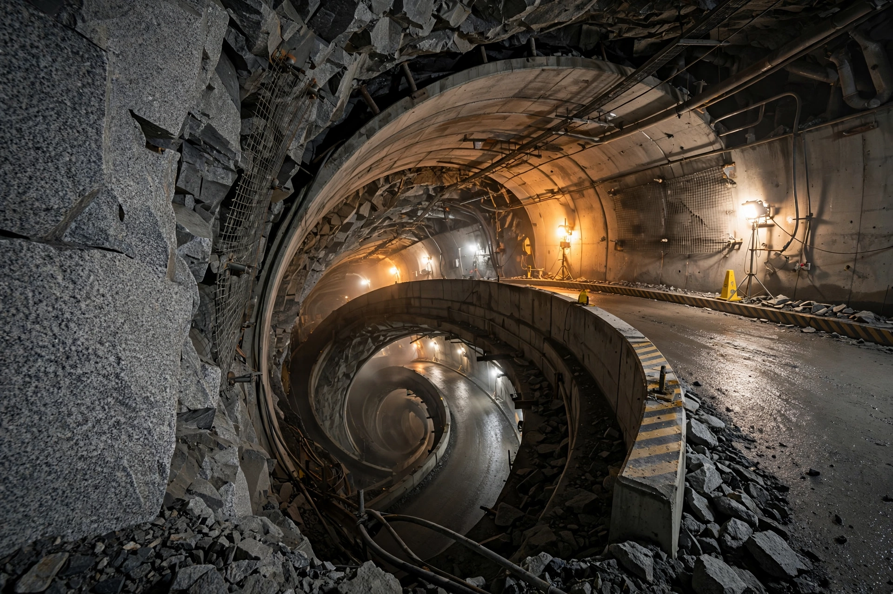

Onkalo spent nuclear fuel repository
| Onkalo repository | |
| Location | Olkiluoto, Eurajoki, Finland |
|---|---|
| Depth | c. 430–450 metres |
| Operator | Posiva Oy |
| Construction began | 2004 (characterisation); repository construction from 2016 |
| Status | World's first deep geological repository for spent nuclear fuel entering operation in the mid-2020s |

The Onkalo spent nuclear fuel repository (Finnish: Onkalo, "small cave" or "hollow") is a deep geological repository for the final disposal of spent nuclear fuel near the Olkiluoto Nuclear Power Plant in Eurajoki, on the west coast of Finland. It is the first facility of its kind in the world to reach the operational stage.
Design
The repository follows the Swedish-developed KBS-3 concept: spent fuel is encapsulated in copper-and-iron canisters, placed in vertical deposition holes in tunnels excavated roughly 430 metres down in 1.9-billion-year-old crystalline bedrock, and surrounded by bentonite clay buffer that swells to seal the holes. A spiral access tunnel about 5 km long descends to the repository level.
History
Site investigations began in the 1980s; Olkiluoto was selected in 1999 and ratified by the Finnish parliament in 2001. Construction of the underground characterisation facility began in 2004, and Posiva received a construction licence for the disposal facility in 2015. The repository is designed to accommodate the lifetime spent fuel of Finland's five reactors and eventually to be backfilled and closed so that it remains safe without monitoring for hundreds of thousands of years.
Long-term safety and memory
Onkalo has become a touchstone in debates about how — or whether — to warn far-future societies about buried radioactive waste, a theme explored in the 2010 documentary Into Eternity. Finnish policy assumes the site will eventually be forgotten, and safety must therefore be passive.